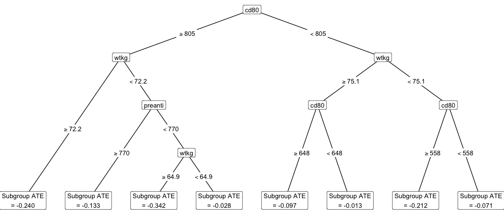
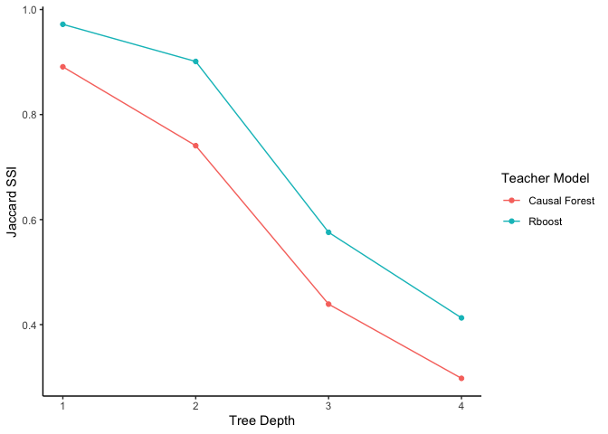

Causal Distillation Trees (CDT) is a novel machine learning method for estimating interpretable subgroups in causal inference. CDT allows researchers to fit any machine learning model of their choice to estimate the individual-level treatment effect, and then leverages a simple, second-stage tree-based model to “distill” the estimated treatment effect into meaningful subgroups. As a result, CDT inherits the improvements in predictive performance from black-box machine learning models while preserving the interpretability of a simple decision tree.

Briefly, CDT is a two-stage learner that first fits a teacher model (e.g., a black-box metalearner) to estimate individual-level treatment effects and secondly fits a student model (e.g., a decision tree) to predict the estimated individual-level treatment effects, in effect distilling the estimated individual-level treatment effects and producing interpretable subgroups. This two-stage learner is learned using the training data. Finally, using the estimated subgroups, the subgroup average treatment effects are honestly estimated with a held-out estimation set.
For more details, check out Huang, M., Tang, T. M., Kenney, A. M. “Distilling heterogeneous treatment effects: Stable subgroup estimation in causal inference.” (2025).
Installation of the R package
You can install the causalDT R package via:
# install.packages("devtools")
devtools::install_github("tiffanymtang/causalDT", subdir = "causalDT")Example Usage
To illustrate an example usage of causalDT, we will use the AIDS Clinical Trials Group Study 175 (ACTG 175), a randomized controlled trial to determine the effectiveness of monotherapy compared to combination therapy on HIV-1-infected patients. This data can be found in the speff2trial R package.
# install.packages("speff2trial")
library(speff2trial)
#> Loading required package: leaps
#> Loading required package: survival
data <- speff2trial::ACTG175 |>
dplyr::filter(arms %in% c(0, 2))
# pre-treatment covariates data
X <- data |>
dplyr::select(
age, wtkg, hemo, homo, drugs, karnof, race,
gender, symptom, preanti, strat, cd80
) |>
as.matrix()
# treatment indicator variable
Z <- data |>
dplyr::pull(treat)
# response variable
Y <- data |>
dplyr::pull(cens)Given the pre-treatment covariates data , the treatment variable , and the response variable , we can run CDT as follows:
library(causalDT)
set.seed(331)
causal_forest_cdt <- causalDT(
X = X, Y = Y, Z = Z,
teacher_model = "causal_forest"
)
plot_cdt(causal_forest_cdt)
Note that when using CDT, a teacher model must be chosen (the default is a causal forest). To help researchers select an appropriate teacher model, the Jaccard subgroup stability index (SSI) was introduced in Huang et al. (2025). Generally, a higher Jaccard SSI indicates a better teacher model. This teacher model selection procedure can be run as follows:
# selecting between causal forest versus rboost
rboost_cdt <- causalDT(
X = as.matrix(X), Y = Y, Z = Z,
teacher_model = rboost
)
plot_jaccard(`Causal Forest` = causal_forest_cdt, `Rboost` = rboost_cdt)
Citation
@article{huang2025distilling,
title={Distilling heterogeneous treatment effects: Stable subgroup estimation in causal inference},
author={Melody Huang and Tiffany M. Tang and Ana M. Kenney},
year={2025},
eprint={2502.07275},
archivePrefix={arXiv},
primaryClass={stat.ME},
url={https://arxiv.org/abs/2502.07275},
}